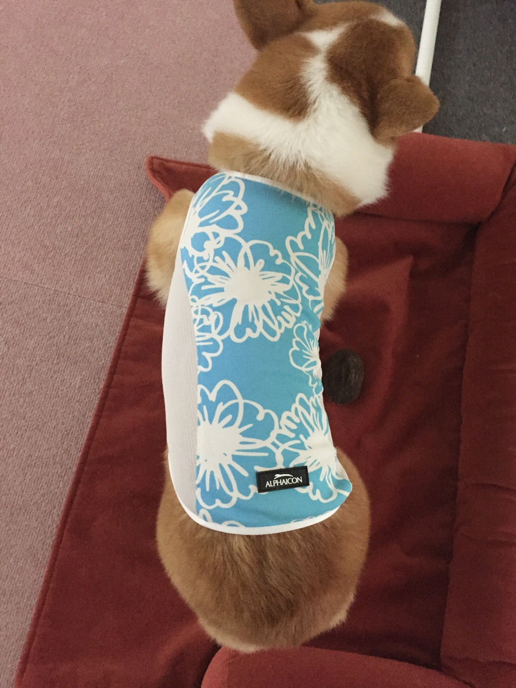
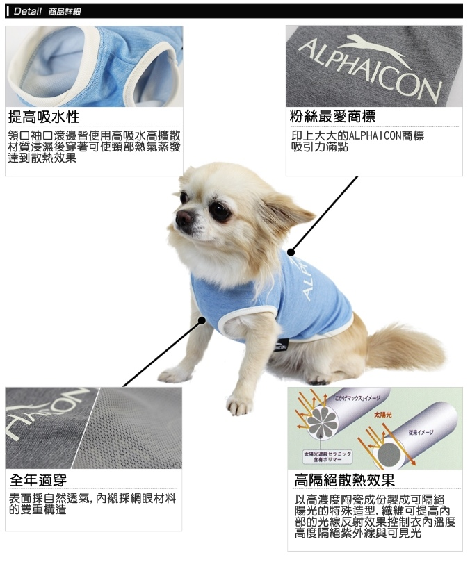
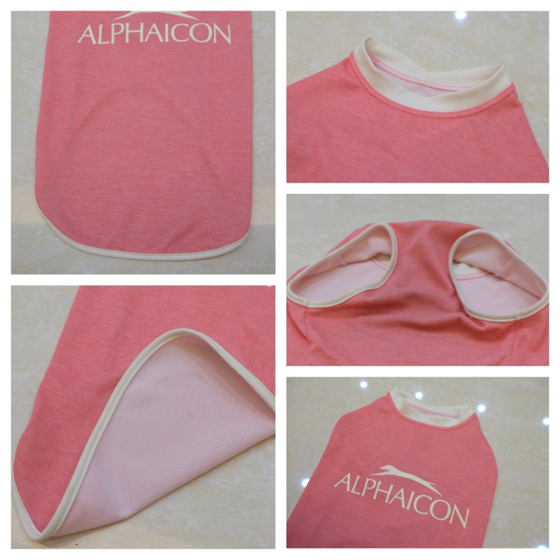
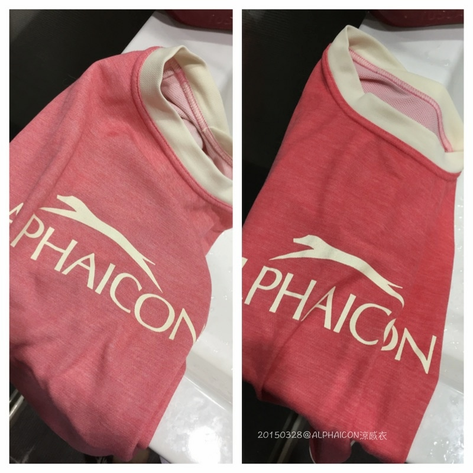
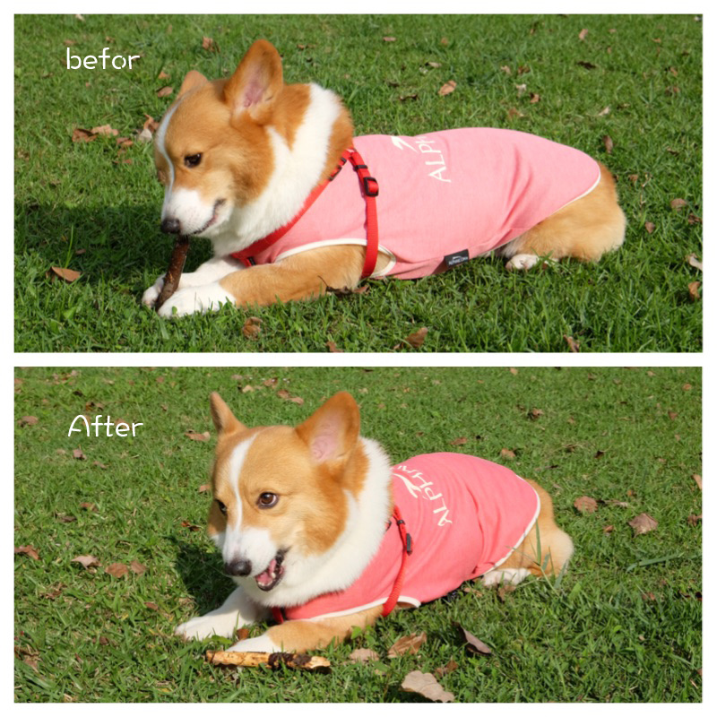

日本ALPHAICON涼涼衣
我想，愛敗家的媽媽們應該對阿法這牌子都不陌生才對 XD
不過現在不用出國也不用找代購，在台灣也買的到啦～（灑花）
花花麻很努力花了很多時間，終於拿到了日本ALPHAICON代理權，賀～
所以本篇是跟花花麻的 寵物雜貨舖 合作邀約哦！
而且2015新款ALPHAICON涼涼衣竟然出了素面款LOGO系列，oh~我的菜!!
修昏昂涼涼衣果然很適合我家阿卡卡 

2013年寵物展的時候，就幫卡卡買過他人生第一件涼涼衣（藍色扶桑花？）
當時卡卡體重10.8kg，三圍是 頸圍：42cm 胸圍:53cm 身長:50cm，穿2L剛剛好
吼～瘦子真的很好買衣服 怒喊((((((

這半年我刻意幫卡卡增重一點，體重維持在12.2kg左右
目前三圍 頸圍：45cm 胸圍：55cm 身長：52cm，三圍幾乎都多了一吋多（汗）
再讓他穿上之前那件2L，變超貼身的，尤其是脖圍很緊相當不舒服
看卡卡臉就知道，衣服太緊他臉會非常臭，而且不～想～動～ 哈哈哈哈
所以這次就算花花麻沒有邀約，我也會掏腰包再重新買一件（價值觀早已崩壞，怎樣XD）
原本那件藍色已經送給現在最瘦的醬董接手了

 ALPHAICON涼感衣 可有效隔絕陽光中的紅外線、紫外線，控制衣內溫度。
ALPHAICON涼感衣 可有效隔絕陽光中的紅外線、紫外線，控制衣內溫度。
發揮散熱與抗UV性能、浸濕後使用可藉水氣蒸發達到散熱效果。
一年四季皆可當底裝穿的狗狗衣。（圖片＆內容取自寵物雜貨舖）

當初選色時，一度小卡關猶豫了（最後花花麻說她先去睡午覺，給我點時間慢慢想XD）
台灣引進九款花色，三種系列 2015 ALPHAICON涼感衣上市
2015 ALPHAICON涼感衣上市
老實說，之前扶桑花那款花色看久了好～膩，個人覺得很不耐看.....
尤其是拍照出來的感覺那件衣服好搶鏡（丟筆）
還是愈簡單愈好，最後素色LOGO款很快勝出，而且粉藍＆粉紅，夏天穿很合適 >////<

但這款跟其它兩款不太一樣，它要浸濕才有涼感效果
不浸濕時可當一般衣物穿,全年皆可使用（好划算？ ）
背部簡單的logo設計，一點也不突兀 

Logo系列有雙層構造
外層像一般衣服的材質（採自然透氣），內層則是網眼材質

週末如果只是在家附近公園or河堤散步
我習慣整件拿去水龍頭浸濕後擰乾，讓卡卡直接穿上外出

but 如果像這天去遠一點的地方跑跑，就會裝一瓶水到現場再弄濕
不然在車上我的褲子會先濕掉（因為他都趴在我腿上 ＝ ＝）

卡卡穿的3L的尺寸，不管是脖圍胸圍還是長度都非常剛好
肚子部分不會ㄌㄤㄌㄤder，完全不用怕 一秒變尿布的慘劇“再次“發生 XD

這天下午跑跑氣溫大概22度左右，很舒服的天氣
所以一開始穿上沒有浸濕的衣服，先找根枝枝陪玩

話說那天不小心捕獲一隻小笨蝶，還好自己嚇到呸掉（汗）
還好蝴蝶福大命大沒屎～從卡卡嘴邊一路搖搖晃晃的低空飛行
結果被媽媽拉嘴皮警告，只能追不準咬蝴蝶，就生氣怒咬枝枝洩憤 噗～
要是有啃甘蔗比賽，老娘一定幫你報名
卡卡鐵定第一名啊～吃潔牙骨也是用啃的，還會呸渣渣呢 XDXD

pink真的好適合卡卡，穿上後立刻跟猛哥說我想把粉藍也打包回來（立馬被翻白眼XD）
唉呦～素色款真的太深得我心了嘛

＝＝＝＝＝＝＝＝＝＝
跑了一陣子剛好太陽也愈來愈大，把拔立刻現場加水浸濕
照片沒有調色，就衣服濕了變深一點的粉紅醬

Before（浸濕前） v.s After（浸濕後）

雖然整件都濕的，但我都是擰的很乾，擠不出水的程度，所以不用擔心會濕黏不舒服
而且涼涼衣水份蒸發的速度其實很快
以卡卡的經驗，
像這天氣溫大概22度並不熱，才二十分鐘衣服已經五成乾，半個小時後大約七、八成乾
又，某天氣溫27度很熱，也讓卡卡穿上外出，才半小時背部已經全乾，腹部也有七成乾
so實際上阿法涼感衣大概只能維持30－40分鐘涼爽，就需要再補充水份
所以不太需要擔心會濕疹什麼的，因為它就for夏天外出使用
應該沒有人會沒事待在家還加水穿涼涼衣吧!?（巴頭）

這張純粹是媽媽私心喜歡就放!! 哈哈
衝向鏡頭變海豹寶寶的樣子 so cute 

卡卡除了ALPHAICON涼涼衣，還有一件Ruffwear涼涼衣，大概只穿過兩次吧!?
比起Ruffwear，我比較偏愛ALPHAICON涼涼衣，Ruffwear實在是太厚重感了
（這個夏天把它出清掉好了XD）
是說夏天讓狗狗穿衣服鐵定會被路人關切
這款的優點就是，大大的logo在背部
1. 可以很跩的跟路人說：記住這牌子，made in Japan的涼涼衣，很貴!!!!（重點）哈哈哈
2. 清潔上還算好清洗，目前草地沾到土啊沙的都洗的掉，但因是淺色要比較小心保持就是
3. 不浸濕就是一般衣物使用，所以一年四季都可以穿，很划算
硬要說缺點的話，這件的確有讓我稍稍困擾的部分就是
衣服下擺容易走一走就掀起來（尤其濕的又比乾的頻率更高，不知為何？）
如下圖卡卡的大腿那邊會往上翻，走路可能還好，但是動作一大跑起來沒幾步就掀背了 
我一看到掀背就想拉平，就醬一直無窮迴圈的在拉整衣服，真的有點崩潰啊啊啊～
猛哥覺得是卡卡唐老鴨尾巴在那扭動的關係造成
因為以前藍色那件沒蓋到尾巴並沒有這樣的情況
但～即便如此，我還是很想打包粉藍色回家 XD
（猛哥：..........）

涼涼衣雖然真的有涼爽散熱的效果，但也並沒有神奇萬能到穿上就不會有中暑的可能
夏天快到了，請各位飼主設身為毛小孩著想
不要大中午的帶狗在柏油路面走跳，也千萬不要把狗狗單獨留在車內
多點用心會少點意外發生
夏天蟲蟲危機，卡卡又很愛偷嚕屎蚯蚓....涼涼衣的出現拯救了我(?) XD
再貼一次卡卡的三圍供參考 頸圍：45cm 胸圍：55cm 身長：52cm（涼涼衣穿3L）
想要2015新款涼涼衣，可以到寵物雜貨舖選購嘍！
 購買連結 http://pets-zakka.com/product_02.php?ms=29&ss=190
購買連結 http://pets-zakka.com/product_02.php?ms=29&ss=190
寵物雜貨舖 FB粉絲團 https://www.facebook.com/petszakka?fref=ts